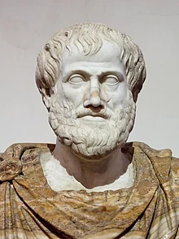
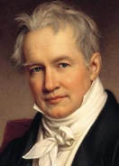
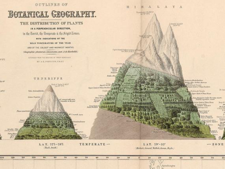
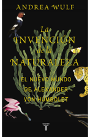
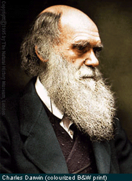
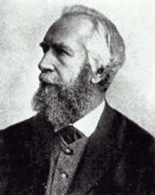
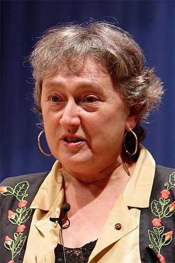

Expand
-
Collapse
Historia de la ecología
Grecia Antigua
Teofastro (287 a.C.)
Relaciones entre las plantas y el medio abiótico.
Aristóteles (384 a. C.)

Clasificación de los seres vivos
Andantes
Volantes
Inteligentes
Nadadores
Siglo XVIII-XIX (Exploraciones)
Humboldt (1769-1859)

Relación entre clima y vegetación.

Gradientes ambientales.
Servicios ecosistémicos
Impacto de la actividad humana

Malthus (1766-1834)
Economista
Crecimiento geométrico de las poblaciones
Restricción del crecimiento poblacional por "una fuerza poderosa"
Darwin (1809-1882)

Usó el concepto de crecimiento poblacional limitado para construir su teoría de la evolución.
Mendel (1822-1884)
Herencia de los caracteres
Origen de la genética...
Haeckel (1834-1919)

Acuñó el término "ecología": estudio científico de las relaciones entre los organismos y su medio ambiente.
Clemens (1874-1945)
Concepto de comunidad vegetal.
Concepto de sucesión ecológica.
Origen del concepto de población (y genética de poblaciones)
Siglo XX
Sheldford (1913)
Nacimiento de la ecología animal
Interrelación entre animales y plantas.
Ecología de comunidades
Lindeman (1945)
"productores" y "consumidores" (sistemas acuáticos)
Relaciones entre materia y energía en los sistemas vivos.
Redes tróficas
Ecología de ecosistemas
Margulis (1967)

Impacto de la "cooperación" en los sistemas biológicos
Muchos autores
Balances de energía y materia
Vista desde el espacio
Ciclos biogeoquímicos.
Cambio global
Ecología del paisaje
Ecología global
Siglo XXI
Muchos autores
Relaciones entre actividad humana y funcionamento de los ecosistemas
Impactos globales
Antropoceno
Socioecología